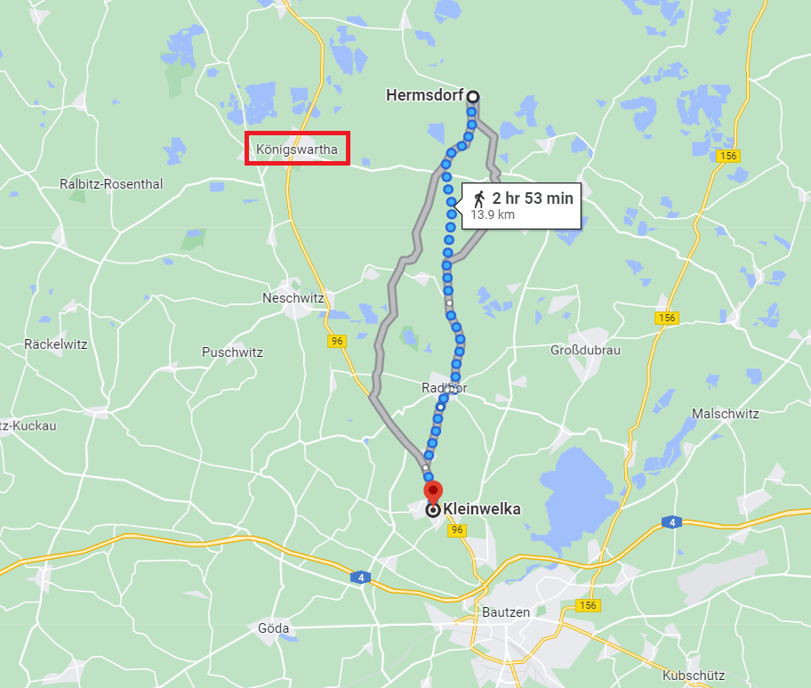
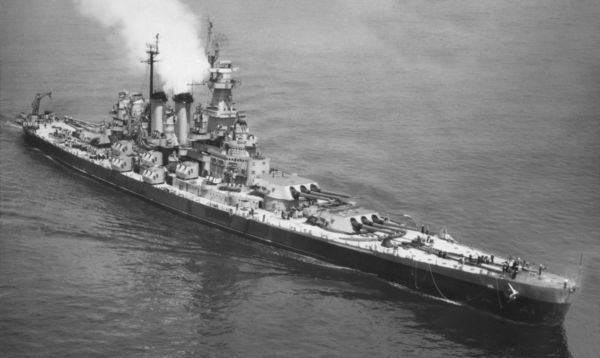

바우첸을 향하여 (16) - 헛도는 톱니바퀴들
게시: 2023-03-27T06:30:38+09:00
압도적인 병력을 가진 프랑스군의 공격에 대응하느라 눈코 뜰 새 없이 바빴던 요크는 바클레이의 어처구니 없는 지원군 요청에 아무 답장을 하지 않았습니다. 대신 정말로 자신의 부대 중 제2 여단을 떼내어 숲길을 통해 바클레이가 있는 쾨니히스바르타로 보냈습니다. 이런 것을 보면 요크가 정말 제대로 된 군인 정신의 지휘관인지 정반대로 관료주의에 빠져 현실 파악을 못하는 인간인지 헷갈립니다만, 직후의 행동을 보면 요크가 닳을 대로 닳은 늙은 여우라는 생각이 듭니다. 요크는 2시간 정도 싸운 끝에 어차피 더 이상 버티는 것은 무리라고 판단했었던 모양입니다. 그런 상황에서 상황 파악을 못한 바클레이가 병력 지원을 요청하자 요크는 후퇴할 명분을 찾았다고 생각하고 바클레이의 명령대로 지원군을 보내면서 '지원군을 보내고 나니 병력 부족으로 어쩔 수 없이 후퇴'한다는 모양새를 냈던 것 같습니다. 그는 제2 여단을 떼어 보내면서 여태까지 지키던 아이흐 언덕과 바이식(Weißig) 마을, 그리고 인근 숲을 모두 포기하고 후퇴했습니다.

(이건 베를린에 있는 요크 백작의 동상입니다. 요크 장군은 나폴레옹보다 10살 위였고, 원래 목사였던 그의 아버지도 젊은 시절엔 대위 계급으로 프리드리히 대왕 밑에서 복무하기도 했습니다. 요크(Yorck)라는 이름은 사실 독일식 이름이라기보다는 영국식 이름 York를 닮았는데, 여기에는 사연이 있습니다. 원래 그의 아버지의 원래 성은 야크 폰 고스트콥스키(Jark von Gostkowski)였는데, 당시 유럽의 변방이었던 프로이센식 이름을 좀 더 폼나는 영국 티가 나도록 코스트콥스키라는 촌스러운 이름을 떼어버리고 야크도 요크(Yorck)로 바꾼 것이었습니다. 우리나라도 요즘 철수나 상호 같은 전통적 이름 대신 어떻게 보면 영어식 이름처럼 들리는 그런 이름을 선호하는데, 딱 그런 경향이라고 볼 수 있습니다.) 이렇게 쾨니히스바르타를 향했던 프로이센 제2 여단은 보통 2시간 정도 걸리는 8km 정도의 거리를 헐레벌떡 1시간 만에 주파하여 쾨니히스바르타에 도착했는데, 이 때 즈음해서는 바클레이도 북쪽 바르타에 있는 정체불명의 프랑스군(실은 수암 장군의 사단)이 당장 남진할 의도가 없다는 것을 깨닫고 프로이센 제2 여단에게 다시 험스도르프로 돌아가 그 쪽의 프랑스군을 무찌르고 바이식 마을을 탈환하라고 명령했습니다. 아마 프로이센 제2 여단은 미치고 환장할 노릇이었을 것입니다. 그렇다고 바클레이가 요크의 프로이센군에게 명령만 내려놓고 두 손 놓고 있었던 것은 아니었습니다. 그도 러시아군 2개 사단을 험스도르프 방면에 파견하여 요크와 대치하던 프랑스군의 우익을 공격했습니다. 싸움은 아이흐 언덕을 둘러싸고 밤 11시까지 치열하게 전개되었으나, 결국 병력면에서 우월한 프랑스군이 아이흐 언덕을 차지했고 연합군은 험스도르프를 지켜낸 것으로 만족해야 했습니다. 바클레이는 짜르에게 보내는 보고서에서 요크와 그의 프로이센군의 용맹을 추켜세우며 자신의 승리를 우아하게 선언했습니다. 네의 프랑스군 선봉을 맡아 싸웠던 로리스통 또한 승리를 주장했습니다. 로리스통은 1만3천에 불과한 자신의 제5 군단이 무려 3만2천에 달하는 적군과 싸워 아이흐 언덕을 점령했다고 네에게 보고했습니다. 실제로 로리스통은 병력의 약 10%에 달하는 1500의 손실을 보았는데 요크는 25%에 달하는 1900의 손실을 보았으니 로리스통이 이긴 것 같기는 합니다. 그러나 중요한 것은 누가 이겼고 누가 더 많은 피를 흘렸는가가 아니었습니다. 욘스도르프 및 험스도르프에서의 충돌은 어디까지나 곁가지 싸움에 불과했고, 주전장인 바우첸 전선에 있어 중요한 것은 네가 제때에 러시아군의 우익을 우회하여 둘러싸는가 하는 것에 있었습니다. 바클레이와 네가 충돌한 것은 원래 나폴레옹의 계획 하에는 없던 것이었는데, 이 돌발 변수가 나폴레옹의 전체 작전 계획을 얼마나 헝클어놓을 것인가가 중요한 문제였습니다. 그런데 이 중대한 순간 즈음해서, 나폴레옹 뿐만 아니라 그의 부하들 모두가 과거와는 달리 좀 둔하고 무책임한 행동을 보이기 시작합니다. 일단 바우첸의 연합군과 대치한 본진의 우익을 맡은 베르트랑의 행동부터가 이상했습니다. 그는 19일 새벽 바클레이와 요크의 2만5천 병력이 북진하는 것을 알고 있었을 텐데 아무런 조치를 취하지 않았습니다. 경계 부족으로 인해 바클레이와 요크의 북진을 아예 몰랐다면 더욱 큰 문제였을 것입니다. 최소한 오후 1시 경부터 맹렬한 포성이 들려왔으니 그때라도 병력을 파견하여 네와 로리스통을 도와야 했을 것 같은데 베르트랑은 아무 조치를 취하지 않았습니다. 나폴레옹도 베르트랑이 그냥 가만히 있던 것에 대해 크게 질책했습니다. 그러나 정말 이상했던 것은, 나폴레옹 본인의 귀에도 점심 무렵부터 쾨니히스바르타 방면의 치열한 포성이 들려왔는데 나폴레옹 본인도 별다른 조치를 취하지 않았다는 점이었습니다. 그는 네나 로리스통, 베르트랑 등이 제국의 원수씩이나 되는 인물들이니 자신이 뭐라고 지시하지 않아도 알아서들 움직일 거라고 생각했던 것일까요? 그는 태평하게 그 날 오후 내내 별다른 지시를 내리지 않다가 저녁 8시 즈음에야 직접 말을 타고 바우첸 북쪽 클라인벨카(Kleinwelka) 마을까지 가서 북쪽을 정찰했는데, 멀리서 보이는 불타는 마을과 포성을 똑똑히 보고 들을 수 있었습니다. 그런데도 그는 아무 것도 하지 않은 베르트랑을 질책하면서도, 뒤늦게라도 지원 병력 파견 등을 지시하지 않았습니다.
어떻게 보면 네에게 지원 병력을 보내지 않은 것이 맞는 판단이었을 수도 있습니다. 나폴레옹은 네가 충분히 접근했으니 바로 다음 날인 20일 바우첸에 대한 주공세를 시작할 계획이었습니다. 그러니 네가 어떻게든 나폴레옹을 도와야지 나폴레옹이 네를 돕는 것은 전체적인 그림에 맞지 않는 것이었습니다. 그렇게 본다면 베르트랑은 억울한 꾸중을 당한 셈이지요.

(포성이 울리던 험스도르프부터 클라인벨카까지의 직선 거리는 대략 12~13km 정도입니다. 당시의 대포 포성은 십수 km까지는 무난히 들렸던 모양인데, 그게 꼭 그렇지만도 않은 것이 바람의 방향이나 지형에 따라 제각각인 모양입니다. 전에 보신 뤼첸 전투에서의 경험담을 보면, 지평선 저쪽에서 발포하는 대포의 포연은 보였는데 그 포성은 들리지 않았다는 기록이 있습니다.)
나폴레옹은 그렇게 네가 바클레이의 저지를 알아서 잘 헤쳐나온 뒤 주어진 임무를 충실히 수행해낼 것을 믿었을 지도 모릅니다만, '제국에서 가장 용감한 자'로 불리던 맹장 네는 그 나름대로 매우 희한한 판단을 내렸습니다. 그는 로리스통의 군단과 함께 당장 5만의 병력을 가졌고, 비록 이틀 뒤의 거리로 뒤쳐져 있긴 하지만 빅토르가 이끄는 2~3만의 추가 병력이 뒤따르고 있음에도 쾨니히스바르타 일대에서 2만 5천 정도의 연합군 병력과 충돌했다는 보고를 받고는 일단 진격을 멈춰 버렸습니다. 만약 베르티에가 5월 15일에 엉성하게 써서 보낸 명령서 때문에 빅토르의 추가 병력이 늦어지지 않아 네가 8만의 병력을 거느렸다면 네는 더 강한 자신감으로 진격을 계속 했을까요? 아무튼 네는 호이어스베르다에 그의 주요 사단들을 머무르게 한 채 그 날 밤은 더 움직이지 않았고, 그날 밤 9시 베르티에에게 보고서를 보내면서 대충 이런 내용을 알렸습니다. "오늘 전투에서 사로잡은 연합군 포로를 취조해보니 연합군은 호이어스베르다로 북진해온다고 합니다. 그렇다면 내일 여기서 적과 전투를 치르게 될 것이니, 베르트랑에게 명령하여 북진하여 내가 내일 벌일 전투를 지원하도록 해주십시요." 아무리 베르티에가 처음에 엉성한 명령문을 보냈다고 하더라도, 이때 즈음 해서는 네도 자신에게 주어진 임무가 연합군의 우익을 포위하는 것이라는 것을 알고 있었습니다. 자신이 바우첸 주전선을 지원해야 한다는 것을 알면서도 오히려 바우첸 주전선에서 병력을 빼내어 자신의 전투를 지원해달라고 한 것은 과거의 네라면 절대 하지 않았을 본말전도의 소극적이고 수동적인 요청이었습니다. 베르티에는 물론, 이미 나폴레옹도 네도 가진 것이 너무 많아 잃을 것도 많아진 40대 중년이 되었고, 특히 작년에 뼈아픈 패배를 맛 본 뒤라 지치고 자신감이 떨어진 상태였던 것이었을까요? 1805년 아우스테를리츠 전투 때만 해도 다들 서로 알아서 척척 손발이 맞던 톱니바퀴들은 이제 이가 빠지고 헐거워진 것처럼 헛돌기 시작했습니다. 나폴레옹과 그의 원수들은 젊은 시절이라면 하지 않았을 그런 실수와 머뭇거림을 연발하며 나폴레옹 제국을 구해낼 대승리를 놓치고 있었습니다.
(WW2 당시의 미해군 전함인 USS North Carolina의 transmission gear 톱니바퀴입니다. 저로서는 상상이 가지 않는 기술 분야로군요.)

(저 기어 사진의 주인인 USS North Carolina (BB-55)입니다. 1940년 진수된 나름 최신예함으로서 만재배수량 약 4만8천톤, 최고 속력 28노트, 주포의 구경은 16인치의 막강 전함입니다. 그러나 이런 괴물도 뱃속의 트랜스밋션 기어가 헛돌면 그냥 떠다니는 고철덩어리에 불과합니다.)
이러는 사이 시간은 5월 20일 새벽으로 이어지고 있었고, 드디어 바우첸 전투가 시작됩니다. Source : The Life of Napoleon Bonaparte, by William Milligan Sloane Napoleon and the Struggle for Germany, by Leggiere, Michael V
https://en.wikipedia.org/wiki/Ludwig_Yorck_von_Wartenburg
https://www.reddit.com/r/pics/comments/33x96f/these_are_the_transmission_gears_for_a_ship_xpost/